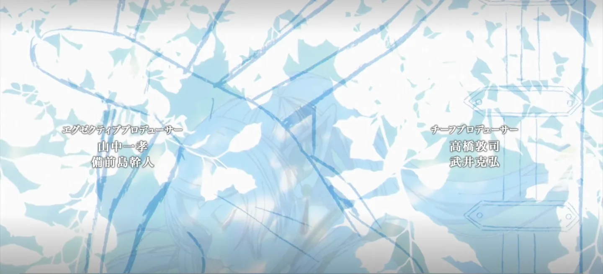

The player opens on what is trending
NAMI asks ani-cli for the current trending list and shows it as posters. Nothing is typed: the list is on screen the moment the app opens.
Trending now
NAMI browses, searches and plays anime through the ani-cli already on your machine. Episode lists, subtitles and a glass player, in light or dark.
NAMI asks ani-cli for the current trending list and shows it as posters. Nothing is typed: the list is on screen the moment the app opens.
Trending now
Type a title and ani-cli returns the matches with their year and episode count. Pick one and NAMI opens its episode list.
The player is the one you already know: a scrub bar you can drag, volume, quality, subtitles and fullscreen, over the stream ani-cli picks.
One switch in Settings. The glass player keeps its own colours; every list, card and field follows the theme you pick.
One build per platform, all at version 0.1.0. Install ani-cli and yt-dlp first: NAMI drives them and does not bundle them.
What NAMI needs
A signed-style NSIS installer for 64-bit Windows 10 and 11. Built from the same app as the Linux builds.
Setup .exe115.9 MiBOne file, no install. Make it executable and run it. Built and booted on this machine before it shipped.
AppImage120.1 MiBRPM for x86_64 Fedora. Install with dnf, then run NAMI from your applications menu.
Package .rpm93.5 MiBA PKGBUILD and its source tarball. Build it with makepkg, or use the tarball to package it yourself.
PKGBUILDSource tarball1.0 MiBThere is no Android build. NAMI is a desktop player for ani-cli, and ani-cli does not run on a phone as it is.
Not yetWhat NAMI needs, what it does not do, and where the video comes from.
What NAMI needs
Yes. NAMI drives the ani-cli on your machine and does not bundle it. Install ani-cli and yt-dlp first.
No. NAMI is a desktop player, and ani-cli is a shell script that does not run on a phone.
From ani-cli. NAMI asks it for the stream and plays the segments through the same tools. NAMI hosts nothing.
Windows 10 and 11, Fedora and Arch, plus most Linux distributions through the AppImage. All need ani-cli on the PATH.
Nothing. NAMI is open source under the MIT licence, with no account and nothing to buy inside the app.